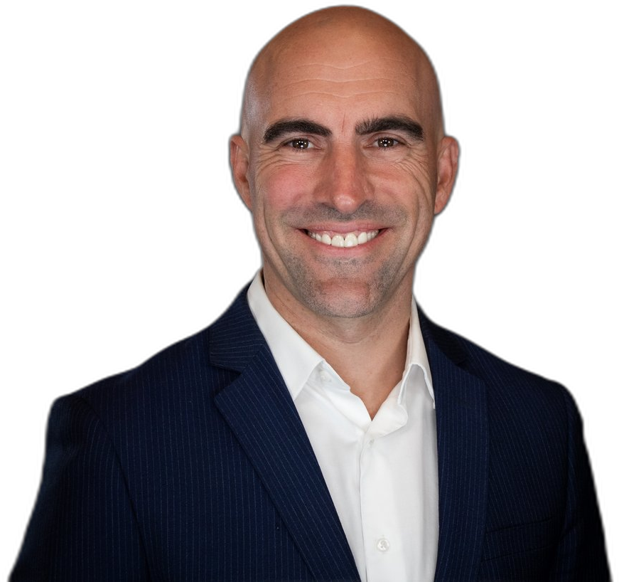
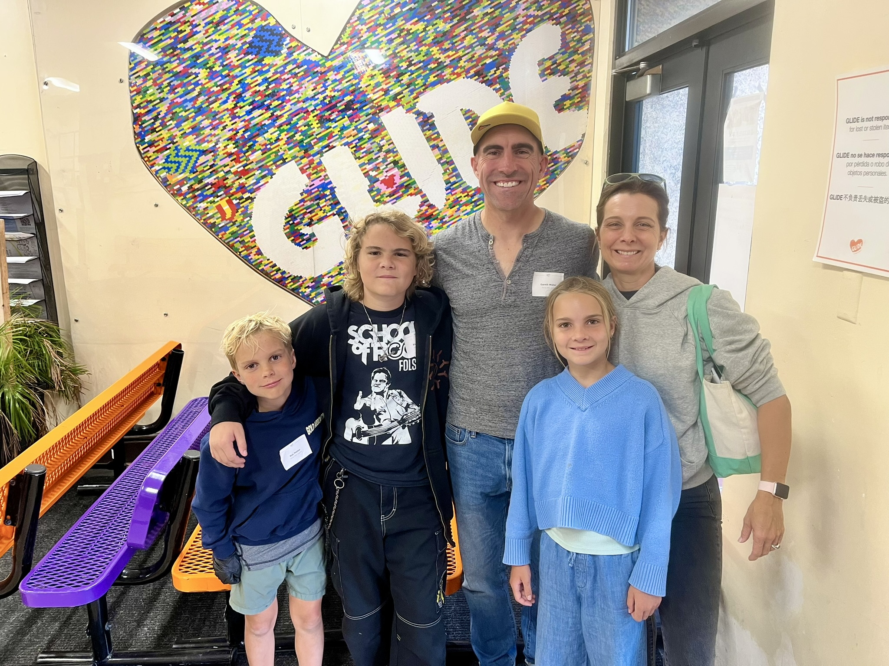
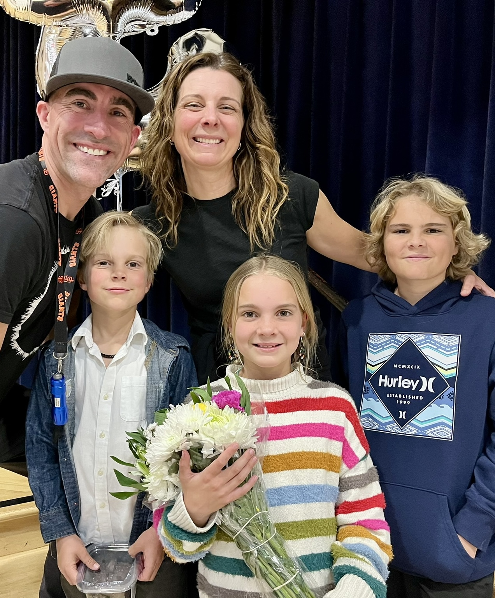
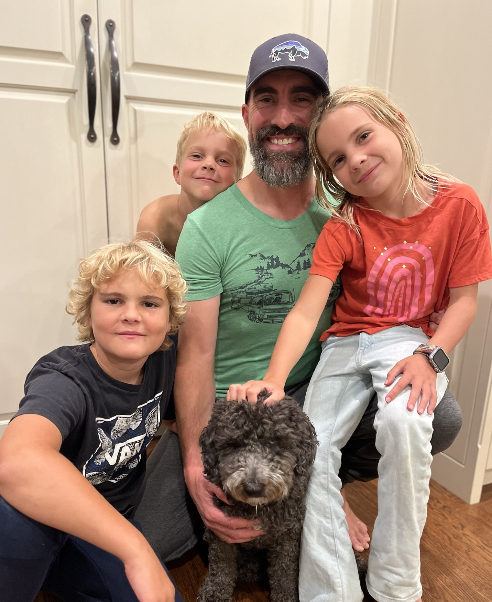

Larkspur raised my family.
I stand for you.
I'm not a career politician, I'm your neighbor, with the time and experience to get things done. After 27 years solving hard problems in business, I'm bringing that same hands-on approach to City Council.
Occupation: Nonprofit President / Parent
Six priorities, one focus: a Larkspur that works for the people.
Too many storefronts sit empty while corporate landlords flex their monopolies. That ends. Everything below follows the same principle: practical results over process, and this town's interests over big business.
Clean Up Deadbeat Commercial Landlords
Large corporations are letting our storefronts sit empty to protect their monopolies — leaving vulnerable neighbors to travel farther for food and basic necessities, and leaving the rest of us with blight in a town that deserves better. I'll push policy that penalizes vacancy and rewards landlords who actually fill their buildings with local businesses.
No Data Centers. Not Now, Not Ever
Data centers consolidate power, water, and energy resources to benefit a handful of corporations at the expense of everyday residents. I'll introduce legislation to keep them out of Larkspur and push Marin County to do the same.
Fire & Flood Resilience
Real infrastructure investment and preparedness — not just more studies — so our streets and homes can withstand the next flood, fire, or insurance shock.
Housing That Fits Larkspur
Supporting solutions that ease our housing shortage and affordability pressure while respecting the character of our neighborhoods.
Strong Public Schools
As a father raising three kids through Larkspur schools, I know what strong local schools need from the city and I'll fight to give it to them.
An Open City Hall
Residents deserve a council that communicates clearly and often.
New energy for Larkspur, with no strings attached.
It's time for parents and neighbors, not career politicians, to take an active role in running this town. Here's what I'm promising going in.
Not a Career Politician
I have no higher political aims than serving the people of Larkspur. I won't be looking for the next rung on the ladder. This is my home, and this council seat is where my ambition ends.
New Blood, New Energy
I'm a parent raising three kids here, running because it's time for people like me, not lifelong insiders, to bring fresh ideas and real urgency to city government.
Money Out of Politics
On principle, I'm not accepting donations. No PACs, no special interests, no deep pockets buying influence, just volunteers willing to knock on doors. Elbow grease over money.
27 years leading teams through hard problems. Now I want to put that to work for Larkspur.
“I've spent my career solving hard problems and delivering results under pressure. I'm not a career politician; I'm your neighbor, with the time and experience to get things done.”
— Gareth Walter, age 48 · Occupation: Nonprofit President / ParentAfter 27 years building and leading technology teams, including a decade at Salesforce and, most recently, as an executive at Vertafore, I retired to give my full attention to this community. I co-founded Rock Marin to support music education in Marin County, and I bring that same hands-on, get-it-done approach to city government.
As a father raising my three kids here, I've cherished the incredible people of this town and its rich history and character. Larkspur needs council members who listen first and turn plans into action — and it's time for parents like me to step up and take an active role.
-
Chief Revenue Officer, VertaforeLed sales and marketing for a leading insurance SaaS provider generating $715M in annual revenue.
-
Group VP, North America West Sales, C3Led enterprise sales across North America through a period of rapid market change.
-
VP, SalesforceScaled Financial Services and Healthcare/Life Sciences into $130M+ businesses; led teams of hundreds through hyper-growth and uncertainty.
-
Co-founder, Co-president Rock MarinNonprofit bringing music education to kids across Marin County.
BBA, University of Texas at Austin, Honors Program
When he's not volunteering at a non-profit, you'll find him on Mt. Tam or with a guitar in hand.
Gareth is a father of three, raising his family in Larkspur schools. Community isn't a talking point for him, it's where he actually spends his time. He believes it's time for parents raising kids here today to take an active role in shaping the town's future, not just the same familiar names. He remains dedicated as a volunteer and donor to many causes.
- Rock Marin — Co-founder & Co-president, supporting music education across Marin County
- Wendy's Wish — Investment Committee & Board Member, empowering women and supporting a world that works for all



Larkspur elections are won door by door. Here's where you come in.
On principle, I'm not asking for donations — getting money out of politics starts with me. This campaign runs on volunteers and elbow grease, not dollars, so every bit of your time makes a real difference.
Volunteer
Knock doors, hold a sign, or help at a community event between now and November 3rd. This is the campaign's only currency.
Sign Up to HelpSpread the Word
Talk to your neighbors. A personal recommendation matters more than any mailer — or any check.
Share This Site